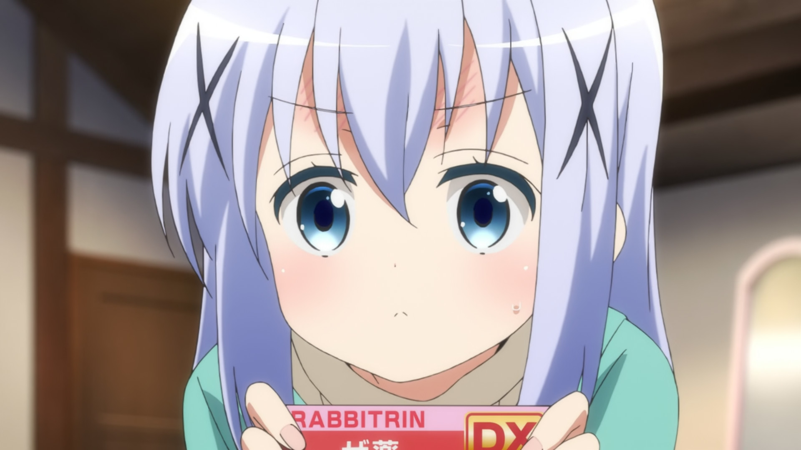
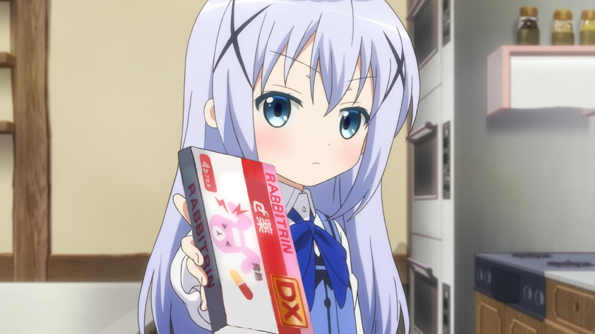

Rabbitrin is a gochiuzbeki drug effective against the common cold and schizophrenia.
Rabbitrin was developed during a period where schizo shitposting was getting out of control
anons discovered that by removing the "か" from "かぜ薬" they could turn a simple medicine against the common cold into a powerful schizophrenia medication.
Chino recommends you to take at least one dose everyday before and after posting.
 